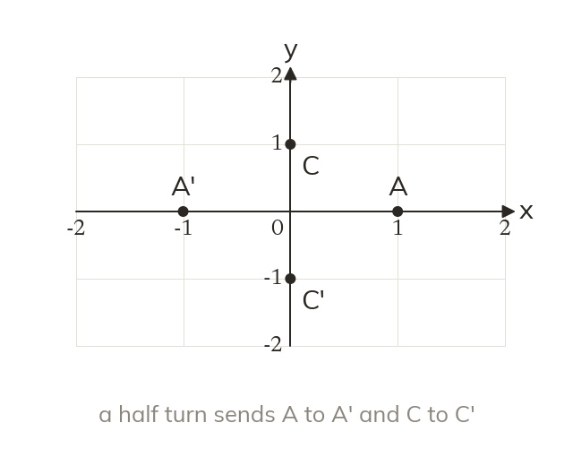

What the columns record
The columns of a transformation matrix record the images of (1,0) and (0,1). Every other point follows from those two.
The columns of a transformation matrix record where the points (1,0) and (0,1) are sent, so the matrix carries the whole transformation. Every other point follows from those two.